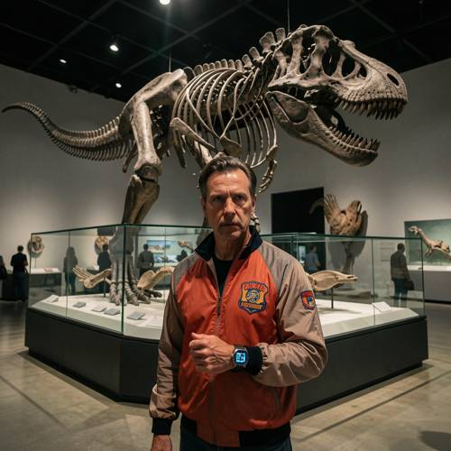
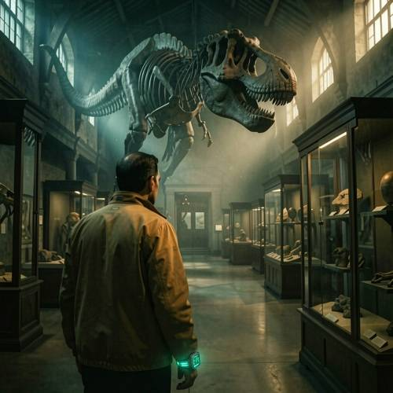
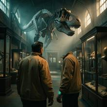
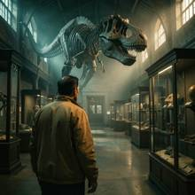
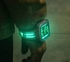

Entity Layout — Under the huge skeleton of the Tyrannosaurus rex, a detective wearing
Under the huge skeleton of the Tyrannosaurus rex, a detective wearing a retro windbreaker stood in front of the display cabinet. There were no other tourists in the exhibition hall, but he was wearing an electronic watch that did not belong to that era on his wrist, full of suspense movie qualities.

Direct — one call, no iteration

Continuum — Kimi K3 + FLUX.2-klein-9B
Judge — Direct
PASSEntity Layout - Three-Dimensional Space — A man stands in the foreground, positioned in front of a glass display case. A large dinosaur skeleton is located behind him, towering over him, placing him under the skeleton's frame.
PASSStyle — The image uses dramatic, focused lighting on the central figure and the skeleton, creating high contrast with the darker surroundings. The man's direct, serious gaze and the looming presence of the skeleton contribute to a tense, cinematic atmosphere consistent with a suspense movie.
FAILGrammar - Negation — The prompt requires the absence of other tourists. However, several other people can be seen in the background of the exhibition hall, both to the left and right of the main subject.
PASSCompound - Feature Matching — The man in the image wears a two-tone jacket (orange and beige) that resembles a retro windbreaker. On his left wrist, a silver-colored watch with a glowing blue digital face is clearly visible, matching the description of an electronic watch.
PASSWorld Knowledge — The image displays a large, bipedal dinosaur skeleton. Its features, including a massive skull, sharp teeth, and very short forelimbs, are consistent with the known anatomy of a Tyrannosaurus rex.
Judge — Continuum
PASSEntity Layout - Three-Dimensional Space — In the image, a man is depicted from behind, standing in what appears to be a museum hall. A massive dinosaur skeleton is suspended above him, placing him 'under' it. The hall is lined with glass display cabinets, and the man is standing in the aisle between them, which places him 'in front of' the cabinets.
PASSStyle — The image has a dark, moody atmosphere created by dramatic lighting with strong shadows and shafts of light, reminiscent of film noir or a modern thriller. The desaturated color palette and the looming presence of the skeleton over the solitary figure contribute to a style full of suspense.
PASSGrammar - Negation — The exhibition hall depicted in the image is empty except for the single male figure in the foreground. There are no other people or tourists visible in the background or elsewhere in the hall.
PASSCompound - Feature Matching — The man in the image is wearing a tan-colored jacket that resembles a retro-style windbreaker. On his left wrist, a glowing green electronic watch is clearly visible.
PASSWorld Knowledge — The image prominently features a large, bipedal dinosaur skeleton with a massive skull, sharp teeth, and characteristically small forelimbs. These features are consistent with the well-known appearance of a Tyrannosaurus rex skeleton.
What the agent did
Thinking
The user wants an image generated. Let me generate it with flux2-klein per policy.
Model
I'll generate this suspenseful museum scene.
Step 1 — `generate_image`
{
"model": "flux2-klein",
"prompt": "Cinematic suspense-movie still: inside a vast dim natural history museum exhibition hall, beneath the huge mounted skeleton of a Tyrannosaurus rex suspended overhead, a lone detective in a retro tan windbreaker stands with his back partly turned, facing a glass display cabinet, gazing into it. The hall is completely empty of other tourists. On his wrist, an anachronistic glowing digital electronic watch stands out sharply. Moody low-key lighting, dramatic shadows, film noir atmosphere, teal-and-amber color grade, dust motes in shafts of light from high windows, deep perspective of the empty hall, suspense thriller cinematography, 35mm film still."
}
Result img_0

Thinking
The image shows two figures — one on the left and one headless-looking figure on the right (the head is missing/obscured, appears as a duplicate jacket with no head). The prompt says "no other tourists" — only the detective should be present. The right figure appears headless and is a duplicate. Need to fix: remove the duplicate/second figure, keep one detective with the glowing watch. Actually the glowing watch is on the right figure's wrist. Let me edit: remove the extra headless person, keep one detective wearing the glowing electronic watch. Let me mark this first? It's not good enough. Edit: "Remove the duplicate figure on the right; there is only one detective standing before the display cabinet wearing the glowing digital watch on his wrist." Actually the watch is on the right (headless) figure. Better: keep the left man, remove the right figure entirely, and add the glowing watch to the remaining man's wrist. Two changes — split into edits. First remove the right figure. Then add watch to his wrist.
Model
The atmosphere and T. rex skeleton are great, but there are two problems: there's a second (headless) figure duplicating the detective — the prompt requires an empty hall with only him — and the glowing watch is on that duplicate's wrist. I'll remove the duplicate first.
Step 2 — `edit_image`
{
"image": "img_0",
"model": "flux2-klein",
"prompt": "Remove the headless duplicate person on the right side entirely, filling the space with the empty museum hall floor and the display cabinet behind him. Only one man in the tan windbreaker remains, standing alone in the empty hall."
}
Result img_1

Thinking
Duplicate removed cleanly. Now the electronic watch is missing — add a glowing digital watch on the man's left wrist (his left arm is at lower left edge, visible). His left hand is visible at bottom left of his body. Add glowing watch there.
Model
The duplicate is gone and the hall is now empty except for the detective. But the electronic watch was lost with the duplicate — I'll add it back on his wrist.
Step 3 — `edit_image`
{
"image": "img_1",
"model": "flux2-klein",
"prompt": "On the man's visible left wrist, add a retro-futuristic digital electronic wristwatch with a glowing cyan-green LED display, subtly out of place in the vintage scene."
}
Result img_2
Thinking
The watch is now glowing cyan-green on his wrist, clearly anachronistic. All elements present: huge T. rex skeleton overhead, detective in retro windbreaker, display cabinet, empty hall, electronic watch, suspense-movie mood. Let me inspect the watch region to verify it looks good, then mark best.
Model
All elements are now in place. Let me verify the watch detail at full resolution.
Step 4 — `inspect_region`
{
"image": "img_2",
"padding": 40,
"roi": "the glowing wristwatch"
}
Result img_3

Thinking
The watch renders as a chunky glowing cyan-green electronic digital watch with glowing band — looks futuristic/anachronistic, reads clearly as "an electronic watch that does not belong to that era." The image satisfies all requirements. Mark best and stop.
Step 5 — `mark_best`
{
"image": "img_2",
"reason": "All prompt elements present and correct: huge T. rex skeleton overhead, lone detective in retro windbreaker before a display cabinet, completely empty exhibition hall, anachronistic glowing electronic watch on his wrist, strong suspense-film lighting and mood."
}
Thinking
Done. Summarize.
Model
The image is complete. Here's what we ended up with: **Final scene (img_2):** - 🦖 A massive T. rex skeleton dominates the frame, mounted overhead in the dim exhibition hall - 🕵️ A lone detective in a retro tan windbreaker stands with his back to us, facing the glass display cabinets - 🏛️ The hall is completely empty — I removed an accidental duplicate figure from the first generation - ⌚ A chunky glowing cyan-green electronic watch on his wrist stands out as deliberately anachronistic — the "object that doesn't belong to that era" - 🎬 Low-key teal-and-amber lighting, dust in the window shafts, and deep shadows give it a strong suspense-thriller film quality The marked image is ready.